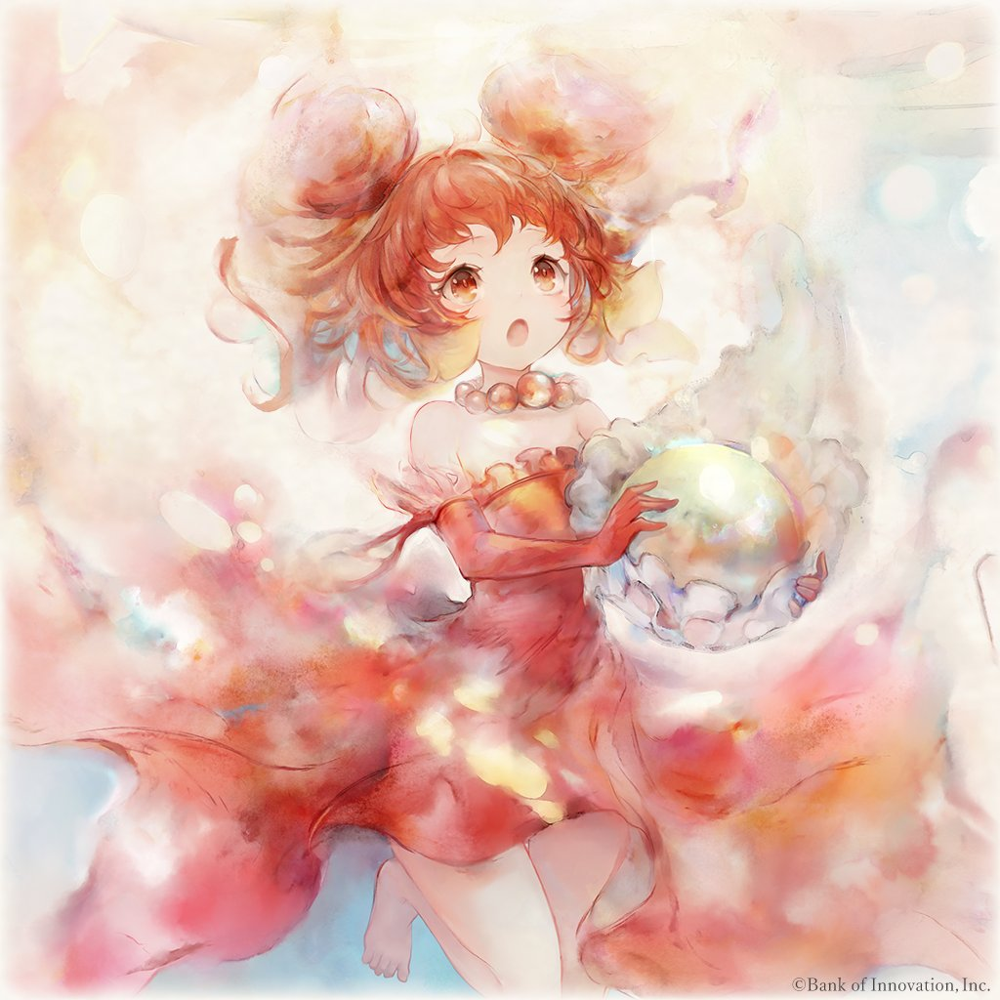
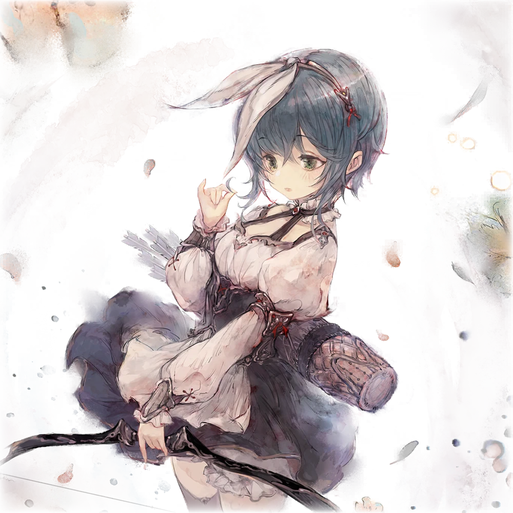

A shrine maiden from the Virtual Sakura Shrine.
With a vivid admiration for idols, she constantly pushes herself to greater heights to become a top elite shrine maiden-idol like no other!
Well... a self-proclaimed 'elite,' to be exact. Fans would think "clutz" fits her better...

games

Monica Memento Mori
There are girls who many call “witches.”
Although they themselves are ordinary, they can wield slightly extraordinary powers.
However, when calamity spreads throughout the land, witches begin to be feared and detested.
Before long, the Church of Longinus commenced what would be known as “The Witch Hunt.”
“Witches are to blame for this calamity. If we kill them, then the calamity will vanish along with them!”
...